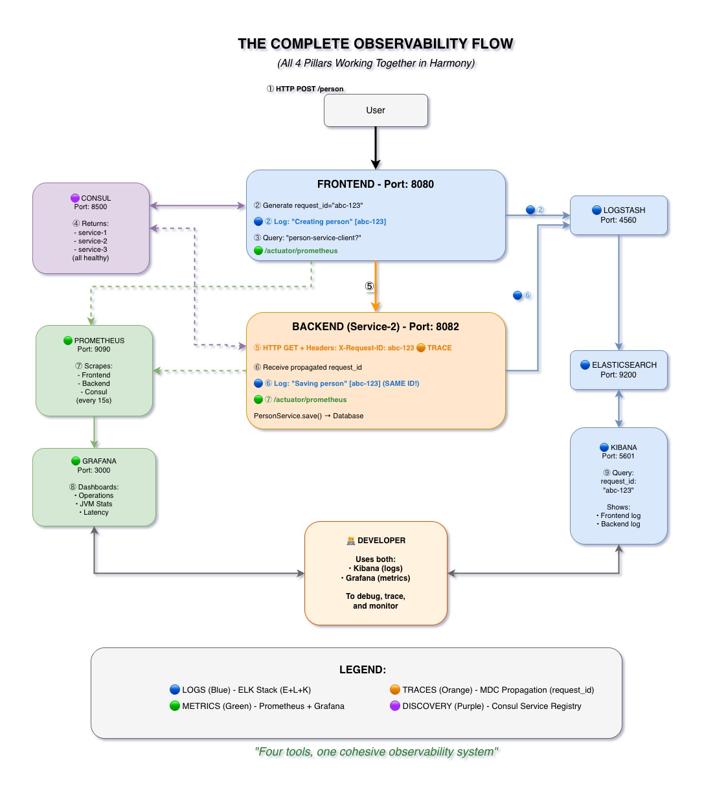

All Components Working Together
From user request to debugging - see how all four tools integrate seamlessly.

End-to-End Flow
- User Request → Frontend: User submits request to frontend service
- Frontend logs to ELK: Generates request_id and logs to Logstash
- Frontend queries Consul: Discovers available backend instances
- Consul returns healthy backends: List of 3 healthy instances
- Frontend calls Backend with MDC headers: Propagates request_id via X-Request-ID
- Backend logs to ELK: Uses same request_id from headers
- Services expose metrics to Prometheus: /actuator/prometheus endpoints
- Grafana visualizes metrics: Real-time dashboards from Prometheus data
- Developers use Kibana + Grafana: Combined view for debugging
Color-Coded Components
Logs (Blue)
ELK Stack (Elasticsearch, Logstash, Kibana)
Metrics (Green)
Prometheus + Grafana
Traces (Orange)
MDC Propagation (request_id)
Discovery (Purple)
Consul Service Registry
Key Message
"Four tools, one cohesive system"
Each component serves a specific purpose, but they all work together to provide complete observability.
Key Takeaways
- All four components work together seamlessly
- Logs (blue), Metrics (green), Traces (orange), Discovery (purple)
- Single request flows through entire stack
- Complete visibility from frontend to backend